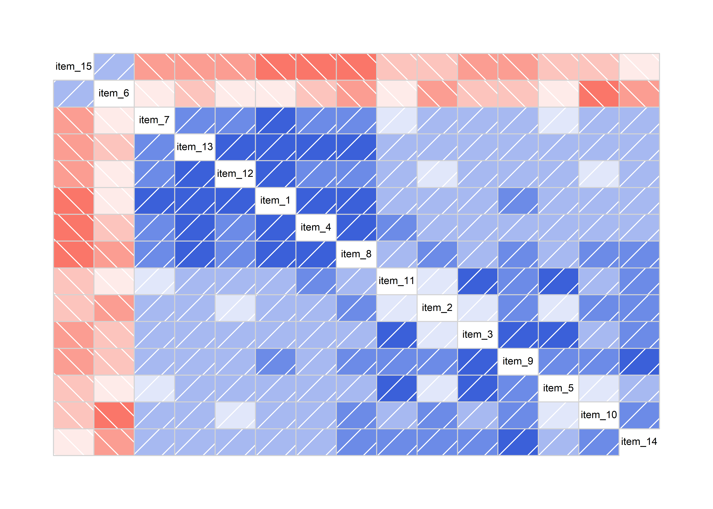
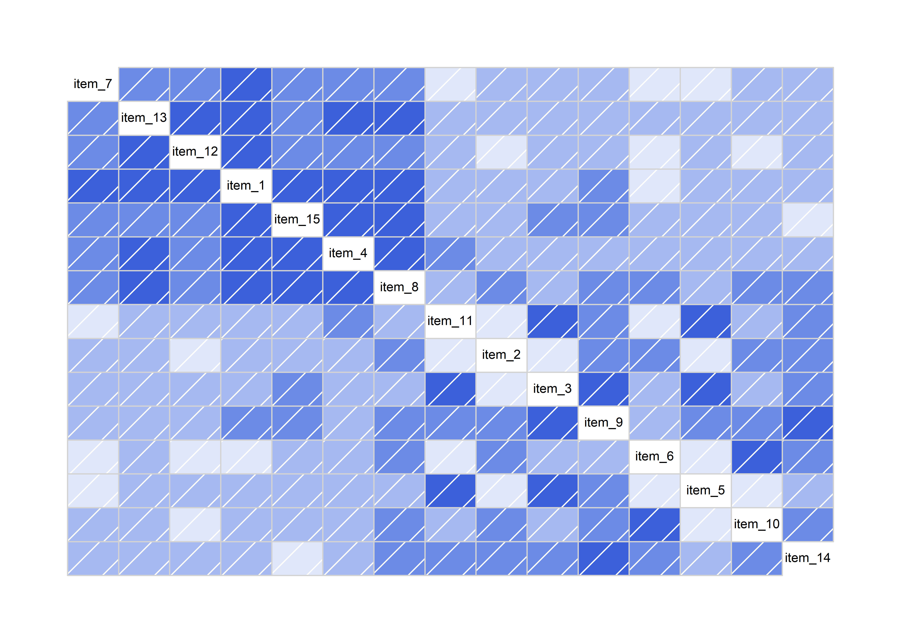
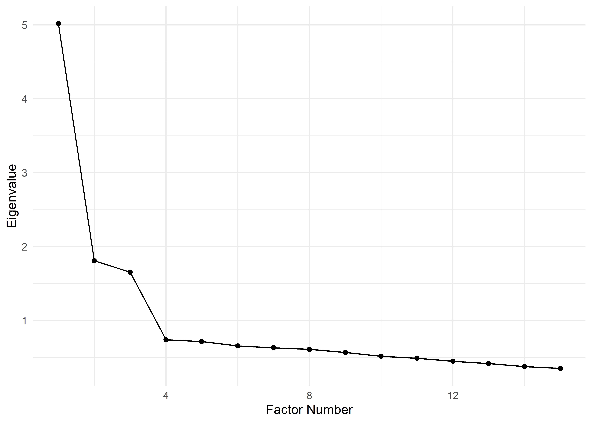
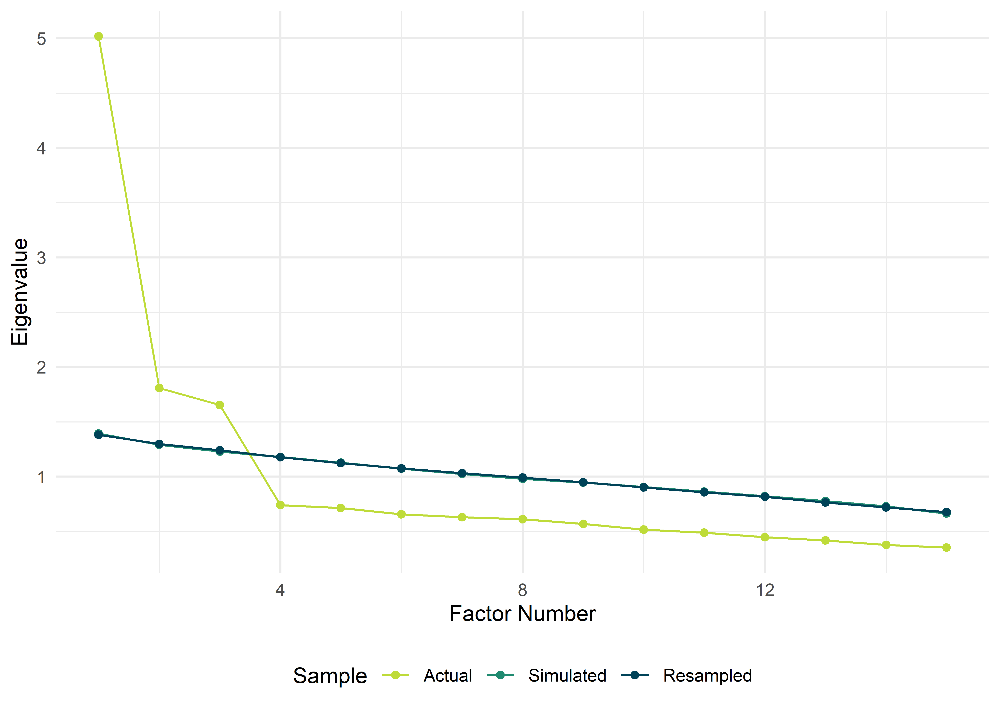
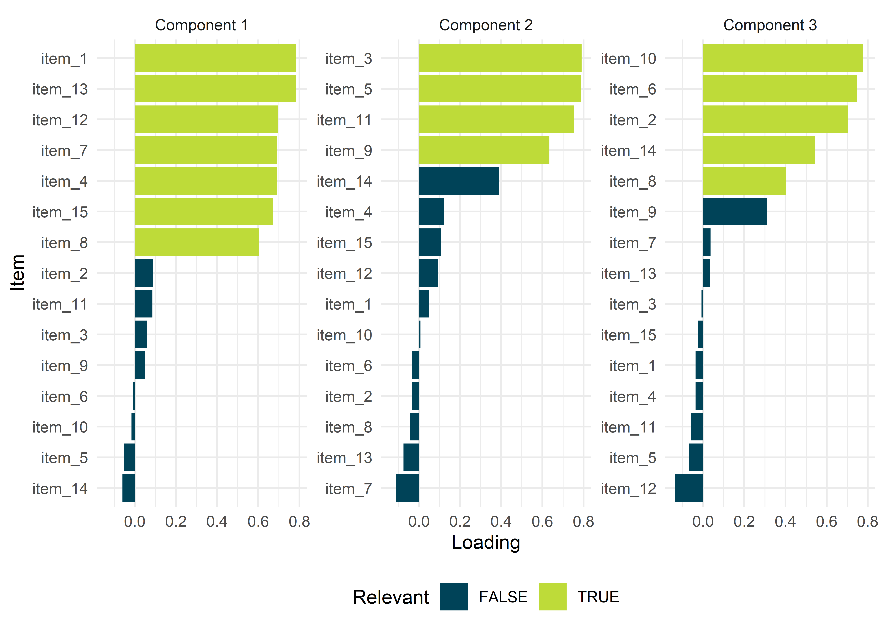

Exploratorische Faktorenanalyse

Die explorative Faktorenanalyse nutzen wir, um latente (d.h. nicht beobachtete) Faktoren zu finden, die unseren Daten vermutlich zugrundeliegen. Besonders oft wird dieses Verfahren bei der Erstellung und Validierung von Fragebögen eingesetzt, um zu überprüfen, welche latenten Faktoren mit diesem Fragebogen erfasst werden.
Pakete
Alle Berechnungen und Abbildungen können wir mit unseren Standardpaketen durchführen. Wir benötigen das tidyverse zum Data Wrangling und zur Visualisierung der Daten. haven benötigen wir für den Import von SPSS-Dateien und rstatix für statistische Analysen. Wenn man sich den Import und das Bereinigen der Daten sparen möchte (Schritte, die man dennoch üben sollte), findet man die Daten auch im Paket costatcompanion.
Zudem benötigen wir das Paket psych, mit dem wir die Faktorenanalyse durchführen werden.
Beispiel
Vielen Leuten macht Feiern einfach Spaß. Deshalb hat ein kluger Kopf einen Fragebogen entwckelt, der abbilden soll, wie sehr sich jemand auf Feiern freut. Der Fragebogen zur Freude an Festivitäten (FFF) umfasst 15 Fragen, die auf einer visuellen Analogskala (VAS) auf einer Skala von 0 (keine Zustimmung) bis 10 (vollste Zustimmung) eingeschätzt werden können.
| Item | Text |
|---|---|
| 1 | Wenn ich an das Wochenende denke, werde ich aufgeregt. |
| 2 | Ich mag es, mich mit anderen Menschen zu unterhalten. |
| 3 | Mich findet man ab 20:00 Uhr auf der Tanzfläche. |
| 4 | Eine spontane Feier wäre jetzt was. |
| 5 | Ich könnte die ganze Nacht durchtanzen. |
| 6 | Andere Menschen sind mir zuwider. |
| 7 | Ich freue mich auf meinen Geburtstag. |
| 8 | Ich freue mich auf die Geburtstage meiner Freunde. |
| 9 | Ich tanze gerne mit anderen Menschen zusammen. |
| 10 | Ich lerne auf Feiern gerne andere Menschen kennen. |
| 11 | Two-Step, Air-Punches und Wave sind meine Sprache. |
| 12 | Ich organisiere gerne Feiern. |
| 13 | Ich freue mich darüber, Einladungen zu Feiern zu erhalten. |
| 14 | Ich feiere gerne mit anderen Menschen. |
| 15 | Es geht mir gut, wenn ich weiß, dass keine Feier ansteht. |
Wir wollen nun herausfinden, welche nicht beobachteten Fakoren hinter diesen 15 Fragen, oder auch Items, stecken könnten.
Voraussetzungen
Wir brauchen Leute, Leute, Leute! Die mit Abstand wichtigste Voraussetzung ist die Stichprobengröße, d.h. alles ab 300 ist okay, ab 1000 super – alles darunter ist wirklich schlech (Field, 2018). Zudem gibt es das Kaiser-Meyer-Olkin-Kriterium (KMO), das nahe 1 sein sollte. Eine einflussreiche Quelle scheinen hier Hutcheson & Sofroniou (1999) zu sein, die “cut-offs” bezüglich akzeptabler KMO-Werte gebildet haben. Nach ihnen sollte der KMO definitiv größer .70 sein.
Zudem gibt es den Bartlett-Test, der die Hypothese prüft, dass die Korrelationsmatrix der Items eine Einheitsmatrix ist. Eine Einheitsmatrix hat auf der Diagonalen Einsen und an allen anderen Stellen Nullen. Eine Korrelationsmatrix, die so aussehen würde, läge nahe, dass die Variablen nicht miteinander korrelieren. Die Basis für eine Faktorenanalyse sind aber Korrelationen.
Daten
Die Daten sind wie immer im Daten-Ordner des Git-Repositories (party.sav), oder im costatcompanion zu finden.
## # A tibble: 320 x 16
## id item_1 item_2 item_3 item_4 item_5 item_6 item_7 item_8 item_9 item_10
## <chr> <dbl> <dbl> <dbl> <dbl> <dbl> <dbl> <dbl> <dbl> <dbl> <dbl>
## 1 1 6.13 6.47 7.16 7.38 7.77 2.38 6.79 5.73 7.50 4.48
## 2 2 5.24 4.42 1.39 4.84 5.42 5.89 7.04 6.97 3.29 4.62
## 3 3 4.01 5.90 4.46 4.55 4.87 1.53 4.92 5.57 3.93 5.85
## 4 4 4.99 3.40 7.63 4.81 6.35 6.31 2.60 5.89 4.88 3.90
## 5 5 6.85 4.58 5.42 5.30 6.19 4.55 6.34 4.14 6.05 4.52
## 6 6 5.16 4.48 7.32 6.24 5.88 7.29 4.80 3.59 5.84 4.36
## 7 7 5.87 6.66 4.29 4.24 6.19 4.40 3.78 4.14 6.11 4.03
## 8 8 6.69 7.12 8.37 8.10 6.51 2.85 6.84 8.31 6.29 3.77
## 9 9 5.05 2.65 6.61 5.87 6.54 5.19 5.43 6.27 4.87 3.73
## 10 10 6.54 4.56 4.41 5.32 5.50 3.55 5.66 5.07 4.38 5.97
## # ... with 310 more rows, and 5 more variables: item_11 <dbl>, item_12 <dbl>,
## # item_13 <dbl>, item_14 <dbl>, item_15 <dbl>In der ersten Spalte (id) sind die Probanden-IDs eingetragen, in den folgenden Spalten die Einschätzung jedes Probanden zu den obigen Aussagen des Fragebogens.
EDA
Aus den Dimensionen des Datensatzes geht hervor, dass wir eine Stichprobengröße von \(N = 320\) haben, was gut ist. Zudem ist es immer eine gute Idee, sich die Korrelationen der Variablen untereinander anzusehen – am besten in einem Korrelogramm. Zunächst werden wir aber einmal die Spalte id los, die zwar für die Dateneingabe sinnvoll und nützlich ist, in den weiteren Analysen aber nur stört.
## # A tibble: 320 x 15
## item_1 item_2 item_3 item_4 item_5 item_6 item_7 item_8 item_9 item_10
## <dbl> <dbl> <dbl> <dbl> <dbl> <dbl> <dbl> <dbl> <dbl> <dbl>
## 1 6.13 6.47 7.16 7.38 7.77 2.38 6.79 5.73 7.50 4.48
## 2 5.24 4.42 1.39 4.84 5.42 5.89 7.04 6.97 3.29 4.62
## 3 4.01 5.90 4.46 4.55 4.87 1.53 4.92 5.57 3.93 5.85
## 4 4.99 3.40 7.63 4.81 6.35 6.31 2.60 5.89 4.88 3.90
## 5 6.85 4.58 5.42 5.30 6.19 4.55 6.34 4.14 6.05 4.52
## 6 5.16 4.48 7.32 6.24 5.88 7.29 4.80 3.59 5.84 4.36
## 7 5.87 6.66 4.29 4.24 6.19 4.40 3.78 4.14 6.11 4.03
## 8 6.69 7.12 8.37 8.10 6.51 2.85 6.84 8.31 6.29 3.77
## 9 5.05 2.65 6.61 5.87 6.54 5.19 5.43 6.27 4.87 3.73
## 10 6.54 4.56 4.41 5.32 5.50 3.55 5.66 5.07 4.38 5.97
## # ... with 310 more rows, and 5 more variables: item_11 <dbl>, item_12 <dbl>,
## # item_13 <dbl>, item_14 <dbl>, item_15 <dbl>## Registered S3 method overwritten by 'seriation':
## method from
## reorder.hclust gclus
Uns wird hier auffallen, dass zwei Items (15 und 6) mit allen anderen negativ korrelieren. Das kann passieren, wenn die Items “falsch herum” codiert wurden. In diesem Fall können wir die Annahme bestätigen, denn dies sind die einzigen beiden Fragen, die “entgegen” der Richtung des Fragebogens sind. Alle anderen Fragen bedeuten bei größerer Zustimmung mehr Spaß beim Feiern, diese beiden jedoch nicht. Wir sollten sie also umcodieren.
party_recoded <- party_raw %>%
mutate(
across(c(item_6, item_15), ~ 10 - .)
)
party_recoded %>%
corrgram::corrgram(order = TRUE)
Und schon sind alle Items miteinander positiv korreliert. Anhand der bereits sichtbaren Clusterung können wir davon ausgehen, dass mindestens ein latenter Faktor vorhanden ist.
Bartlett-Test
Den Bartlett-Test kann man folgendermaßen ausführen. Das Ergebnis ist signifikant, \(K^2(14) = 56.075, p < .001\), und bedeutet, dass unsere Korrelationsmatrix keine Einheitsmatrix ist. Also alles super!
##
## Bartlett test of homogeneity of variances
##
## data: party_recoded
## Bartlett's K-squared = 56.075, df = 14, p-value = 5.653e-07KMO
Auch der KMO ist sehr einfach auszuführen. Unser KMO ist .88, also alles super. Unsere Daten eignen sich also für eine EFA.
## Kaiser-Meyer-Olkin factor adequacy
## Call: KMO(r = party_recoded)
## Overall MSA = 0.88
## MSA for each item =
## item_1 item_2 item_3 item_4 item_5 item_6 item_7 item_8 item_9 item_10
## 0.90 0.88 0.85 0.92 0.83 0.80 0.89 0.90 0.87 0.84
## item_11 item_12 item_13 item_14 item_15
## 0.85 0.92 0.90 0.88 0.91Anzahl der zu extrahierenden Faktoren
Scree-Plot
Die Situation bei der EFA ist etwas misslich: Wir wollen latente Faktoren “entdecken”, müssen dem Verfahren aber vorher sagen, wie viele Faktoren wir eigentlich extrahieren/finden wollen. Deshalb kommt der Bestimmung der Anzahl der zu extrahierenden Faktoren eine besondere Bedeutung zu.
tibble(
Eigenvalue = parallel_analysis$pc.values
) %>%
rownames_to_column(var = "factor_number") %>%
mutate(factor_number = as.numeric(factor_number)) %>%
ggplot(aes(factor_number, Eigenvalue, group = 1)) +
geom_line() +
geom_point() +
labs(x = "Factor Number", y = "Eigenvalue")
Im Scree-Plot suchen wir nach dem “Knick” in der Linie der Eigenwerte. Nach diesem “Knick” sollen die restlichen Eigenwerte nur noch wie “Geröll” (engl. scree) aussehen, also flach ablaufen. Dabei gibt es jedoch unterschiedliche Auffassungen darüber, ob man den letzten Punkt vor dem Knick noch mit aufnimmt, oder nicht. In diesem Beispiel ist das Ergebnis recht klar, wir würden drei Faktoren extrahieren. Beachten sollte man jedoch, dass der Scree-Test ein rein subjektives Verfahren und somit kein wirklicher “Test” ist.
Parallelanalyse
In SPSS wäre man ohne weiteres Zutun nun aufgeschmissen, in R gibt es zum Glück die Parallelanalyse, mit der sich die Anzahl der zu extrahierenden Faktoren objektiv bestimmen lässt. Dazu werden anhand der Dimensionen des Datensatzes zufällige Daten generiert und die dem entsprechenden Eigenwerte in den Scree-Plot eingezeichnet. Extrahieren würden wir so viele Faktoren, deren Eigenwert über denen der zufälligen Simulationen liegt.

Wir würden also auch anhand des Ergebnisses des Scree-Tests drei Faktoren extrahieren.
Rotation
Um die Faktoren möglichst gut auseinanderhalten zu können, ist es eine gute Idee, die Koordinatenachsen im \(n\)-Dimensionalen Raum zu rotieren (\(n\) ist dabei die Anzahl der Faktoren). Dabei kann man zwischen orthogonalen und obliquen Rotationen unterscheiden. Bei orthogonalen Rotationen postuliert man, dass die Faktoren nicht miteinander korrlieren, bei obliquen Rotationen geht man von einer Korrelation der Faktoren aus (wie es in der Psychologie üblich ist).
Gute orthogonale Rotation sind Varimax und Quartimax; gute oblique sind Oblimin und Promax.
Durchführung
In meiner Benutzung des Begriffs “Faktorenalayse” habe ich bisher etwas geschummelt. Streng genommen machen wir nämlich keine Faktorenanalyse, sondern eine Hauptkomponentenanalyse. Bei einer Faktorenanalyse versuchen wir – ganz vereinfacht gesagt – latente Faktoren durch die Items zu erklären. Bei der Hauptkomponentenanalyse gehen wir jedoch davon aus, das der Zusammenhang genau anders herum ist: Wie denken uns, dass es irgendwo diese latenten Faktoren gibt und diese dann die Antworten der Probanden auf den Items beeinflussen. Wir schätzen die Faktoren zwar anhand der Items, aber wir unterstellen den Zusammenhang von den latenten Faktoren auf die Items.
Die Hauptkomponentenanalyse führen wir mit der Funktion principal() aus. Als Argument nfactors geben wir die Anzahl der zu extrahierenden Faktoren ans, als rotate die Rotationsmethode.
Wir erhalten so einen ganz “messy” Output, in dem uns einiges mitgeteilt wird: Da ist zunächst die Strukturmatrix, in der pro Item die standardisierten Ladungen auf jeden Faktor angegeben sind (sowie die Kommunalitäten in h2, Uniqueness in u2, und die Komplexität in com). Die Faktorladungen nutzen wir, um herauszufinden, auf welchem Faktor ein Item “lädt”; je höher die Ladung, desto mehr “lädt” das Item auf dem Faktor, desto mehr gehört es zu dem Faktor.
Anschließend erhalten wir Angaben zu den extrahierten Faktoren an sich, unter anderem die erklärten Varianzen. Danach gibt es die Korrelation der latenten Faktoren untereinander und noch einige Angaben zur Modellgüte.
Uns interessieren zu Beginn vor allem die Faktorladungen, welche wir uns so ausgeben lassen können.
##
## Loadings:
## TC1 TC2 TC3
## item_1 0.786
## item_2 0.702
## item_3 0.790
## item_4 0.690 0.123
## item_5 0.788
## item_6 0.746
## item_7 0.691 -0.111
## item_8 0.604 0.403
## item_9 0.634 0.309
## item_10 0.777
## item_11 0.754
## item_12 0.694 -0.138
## item_13 0.785
## item_14 0.390 0.543
## item_15 0.672 0.107
##
## TC1 TC2 TC3
## SS loadings 3.513 2.428 2.239
## Proportion Var 0.234 0.162 0.149
## Cumulative Var 0.234 0.396 0.545Wir erhalten also die Strukturmatrix von oben, aber schon mit einigen Änderungen. Hier wurden bereits kleine Faktorladungen entfernt. Dieses Verhalten können wir weiter beeinflussen. Üblicherweise werden Faktorladungen bis (je nach Autor) 0.30, bzw. 0.40 nicht beachtet. Außerdem können wir uns die Ausgabe auch sortieren lassen, damit passende Items untereinanderstehen.
## Principal Components Analysis
## Call: principal(r = party_recoded, nfactors = 3, rotate = "oblimin")
## Standardized loadings (pattern matrix) based upon correlation matrix
## item TC1 TC2 TC3 h2 u2 com
## item_1 1 0.79 0.63 0.37 1.0
## item_13 13 0.79 0.60 0.40 1.0
## item_12 12 0.69 0.49 0.51 1.1
## item_7 7 0.69 0.45 0.55 1.1
## item_4 4 0.69 0.53 0.47 1.1
## item_15 15 0.67 0.50 0.50 1.1
## item_8 8 0.60 0.40 0.65 0.35 1.8
## item_3 3 0.79 0.66 0.34 1.0
## item_5 5 0.79 0.58 0.42 1.0
## item_11 11 0.75 0.60 0.40 1.0
## item_9 9 0.63 0.62 0.38 1.5
## item_10 10 0.78 0.60 0.40 1.0
## item_6 6 0.75 0.54 0.46 1.0
## item_2 2 0.70 0.53 0.47 1.0
## item_14 14 0.54 0.51 0.49 1.8
##
## TC1 TC2 TC3
## SS loadings 3.62 2.53 2.33
## Proportion Var 0.24 0.17 0.16
## Cumulative Var 0.24 0.41 0.57
## Proportion Explained 0.43 0.30 0.27
## Cumulative Proportion 0.43 0.73 1.00
##
## With component correlations of
## TC1 TC2 TC3
## TC1 1.00 0.33 0.30
## TC2 0.33 1.00 0.22
## TC3 0.30 0.22 1.00
##
## Mean item complexity = 1.2
## Test of the hypothesis that 3 components are sufficient.
##
## The root mean square of the residuals (RMSR) is 0.06
## with the empirical chi square 269.11 with prob < 2.7e-27
##
## Fit based upon off diagonal values = 0.96Ein Bild sagt mehr als tausen Worte, deshalb kann man diese Strukturmatrix auch zeichnen.

Die Items, die grün dargestellt sind, sind jene mit standardisierten Faktorladungen über .40. Wir haben nun also pro Komponente (oder Faktor) jene Items isoliert, die auf diesem Faktor am meisten laden. Nun müssen wir uns die Beschreibung der Items von oben holen und diese den Faktoren zuordnen.
| Item | Text |
|---|---|
| Faktor 1 | |
| 1 | Wenn ich an das Wochenende denke, werde ich aufgeregt. |
| 4 | Eine spontane Feier wäre jetzt was. |
| 7 | Ich freue mich auf meinen Geburtstag. |
| 12 | Ich organisiere gerne Feiern. |
| 13 | Ich freue mich darüber, Einladungen zu Feiern zu erhalten. |
| 15 | Es geht mir gut, wenn ich weiß, dass keine Feier ansteht. |
| Faktor 2 | |
| 3 | Mich findet man ab 20:00 Uhr auf der Tanzfläche. |
| 5 | Ich könnte die ganze Nacht durchtanzen. |
| 9 | Ich tanze gerne mit anderen Menschen zusammen. |
| 11 | Two-Step, Air-Punches und Wave sind meine Sprache. |
| Faktor 3 | |
| 2 | Ich mag es, mich mit anderen Menschen zu unterhalten. |
| 6 | Andere Menschen sind mir zuwider. |
| 8 | Ich freue mich auf die Geburtstage meiner Freunde. |
| 10 | Ich lerne auf Feiern gerne andere Menschen kennen. |
| 14 | Ich feiere gerne mit anderen Menschen. |
Nun müssen wir selbst tätig werden, indem wir versuchen zu interpretieren, was die Items pro Faktor “gemeinsam” haben. Für den Faktor 1 könnte man sich etwas denken wie “Vorfreude auf eine Feier”. Faktor 2 wäre vielleicht etwas wie “Tanzen” und Faktor 3 z.B. “Geselligkeit”.
Aus der Praxis
EDA
Durchführung
Literatur
Field, A. P. (2018). Discovering Statistics using IBM SPSS Statistics (5th ed.). SAGE.
Hutcheson, G., & Sofroniou, N. (1999). The multivariate social scientist: Introductory statistics using generalized linear models. Sage Publications. https://doi.org/10.4135/9780857028075